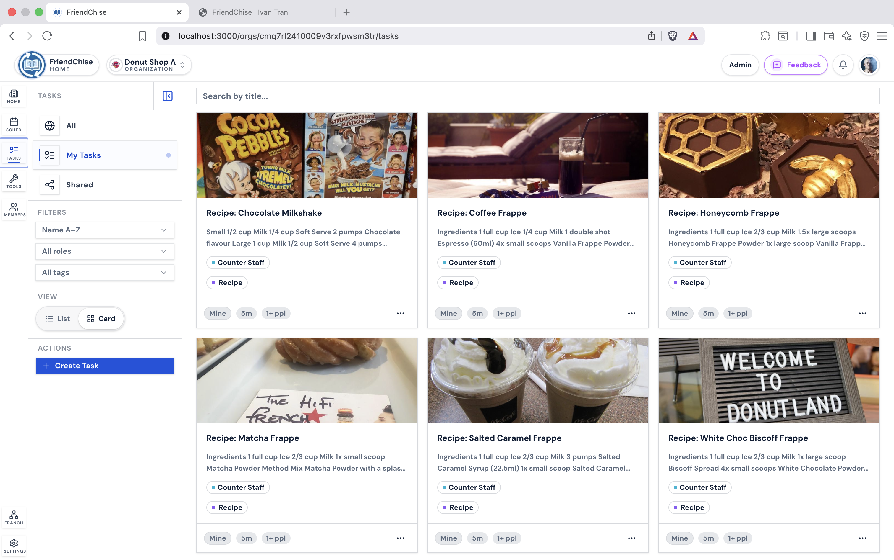
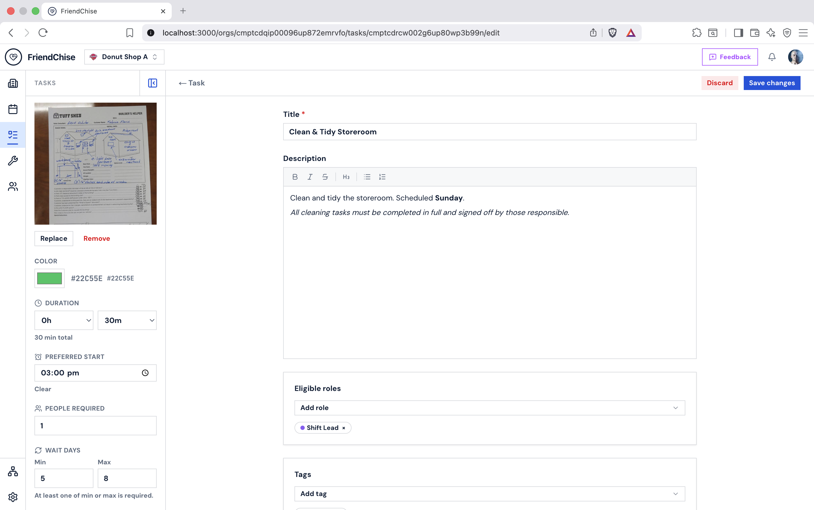

The Problem
New franchisees often start without the operational knowledge that successful stores already have. That leads to inconsistent execution, slower onboarding, and avoidable mistakes.
I worked at a doughnut franchise location that declined from one of the stronger-performing stores to one of the weakest over a two-year period.
From direct experience, I saw how inconsistent training, limited knowledge sharing and fragmented operational processes contributed to avoidable mistakes.
FriendChise is the platform I wished the team had.
The Solution
FriendChise captures operational knowledge from successful stores and makes it reusable across the network. Managers can apply a weekly template, track work through the day, and keep the basics consistent without manual overhead.
Workers see schedules on any device and leave tips in task comments, so knowledge stops living in one person's head.
Currently deployed at a real Walker's Doughnuts franchise location.
My Role
I founded and lead the development of FriendChise.
My responsibilities include product planning, stakeholder interviews, interface design, full-stack development, database modelling, multi-tenant architecture, permissions, testing, deployment, documentation and open-source contributor coordination.
I designed the platform from direct hospitality experience and continue to improve it using feedback from staff and managers at the pilot location.
What's Live
A live product built to help franchise teams share knowledge, keep work organized, and run with less paper and less guesswork.
Shared Knowledge & Task Workflow
- Task sharing and comments — publish tasks across the network and use threaded comments to share ideas, improve recipes, and capture better ways of working
- Task library — searchable recipes and tasks that keep everything organized and reduce reliance on scattered paper instructions
- RBAC filters — flexible permissions that decide which roles can see which tasks, timetables, and tools
Planning & Scheduling
- Timetable management — weekly and daily planning tools that help teams stay on track
- Roster list — track who works when, then apply that schedule back into the timetable
- Franchise system — expand into new stores while keeping shared processes and knowledge connected
Operational Tools
- Tool hub — a set of practical tools for day-to-day operations
- Item list — a visual training aid for new staff, showing items like donut trays, decoration steps, filling, and placement
- Conversion tool — flexible measuring that helps teams make the right amount of product and reduce waste
Access & Structure
- Role-based access control — permission gates that stay flexible for different roles and filter what each user can see and do
- Member and org management — invite people, organize teams, and keep ownership structured as the business grows
Screenshots

Timetable — weekly calendar with colour-coded task blocks

Timetable — simple list view with assignees and status

Task Library — list view with tags, roles, and status

Task detail — description, comments, and voting

Create Task — task form with color, image, and role options

Conversion Tool — scale ingredient quantities by batch

Roster — multi-week staff shift scheduling

Task comments — threaded discussion with votes and pinned notes
Tech Stack
Frontend
Next.js 16, React 19, TypeScript, Tailwind v4, shadcn/ui, Radix UI
Backend & APIs
Node.js, services/actions, REST routes, Zod v4
Data & Auth
PostgreSQL on Supabase, Prisma v7, Auth.js v5, RBAC, org-scoped data
Testing & QA
Vitest and Playwright with 582 automated tests covering permission checks, service-layer logic, validation, scheduling behaviour, multi-tenant data boundaries and key end-to-end workflows.
DevOps & Reliability
Vercel, GitHub Actions, Sentry, Upstash Redis rate limiting
Product & Structure
Figma wireframes, roadmap planning, multi-tenant architecture, reusable UI systems
Architecture Diagram
Application Stack
Requests move through the web app, server logic, permissions, data access and reliability tooling in a simple layered flow.
Multi-Tenant Data Model
The domain model keeps franchise data scoped from organisation level down to the operational objects the team works with every day.
Testing and Reliability
The test suite covers permission checks, service-layer logic, validation, scheduling behaviour, multi-tenant data boundaries and key end-to-end workflows.
Production readiness is supported with GitHub Actions for CI, Sentry monitoring for runtime visibility and Redis-backed rate limiting for safer request handling.
Measured Scope
The following figures reflect the size of the live pilot, the implementation, and the supporting product surface built around it.
Lessons and Challenges
Building FriendChise required more than adding features. I had to solve complex UI state problems, simplify overlapping timetable data, design a franchise hierarchy, and turn staff feedback into practical product decisions.
The project also changed how I approach engineering. I now spend more time understanding data flow, component boundaries and user needs before implementing a solution.
What This Project Demonstrates
Product Engineering
Designed the product around real hospitality workflows rather than a fictional brief. Used stakeholder feedback, Figma planning and iterative development to shape the platform.
Full-Stack Architecture
Built a multi-tenant application using Next.js, TypeScript, PostgreSQL and Prisma, with organisation-scoped data, role-based permissions and reusable service-layer logic.
Testing and Reliability
Created automated coverage for permissions, validation, scheduling logic and core workflows. Added GitHub Actions, Sentry monitoring and Redis-backed rate limiting to support safer production deployment.
Open-Source Leadership
Maintained the project architecture, reviewed contributions, documented workflows and helped contributors work within a consistent codebase.
Real-World Validation
Deployed the platform at a live Walker’s Doughnuts location and continued improving it through staff and manager feedback.